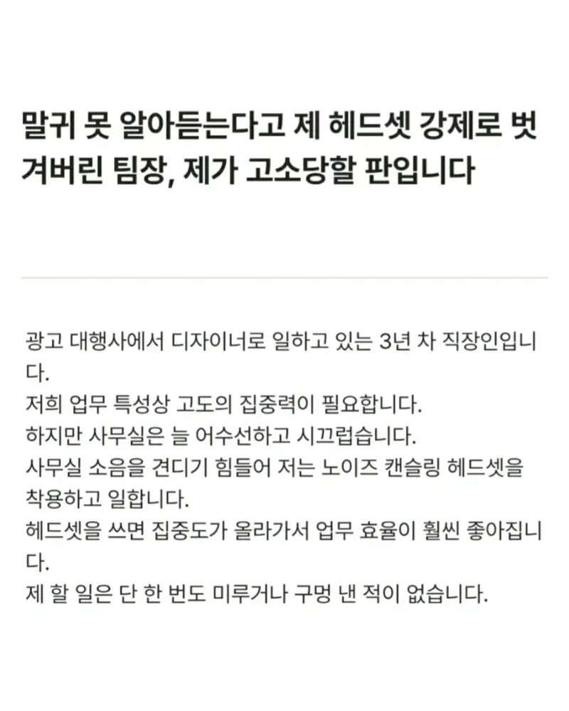
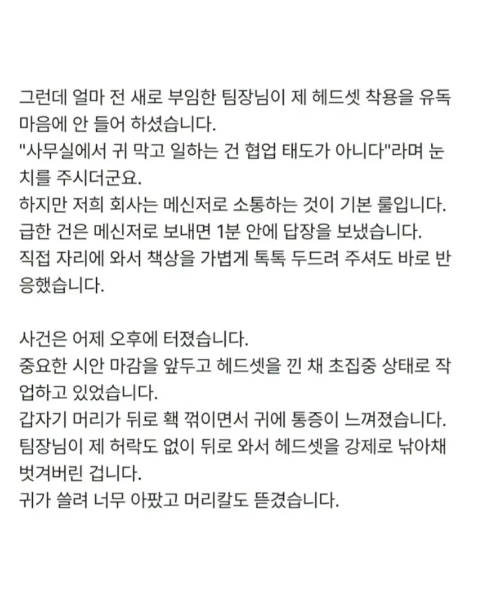
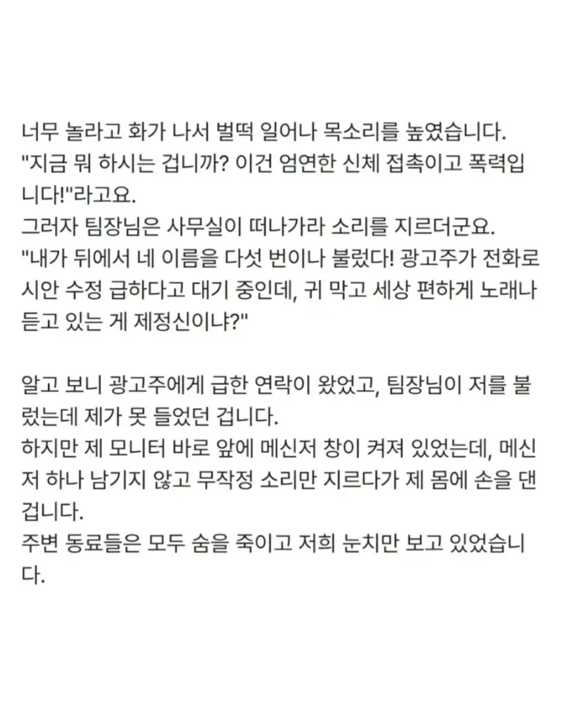
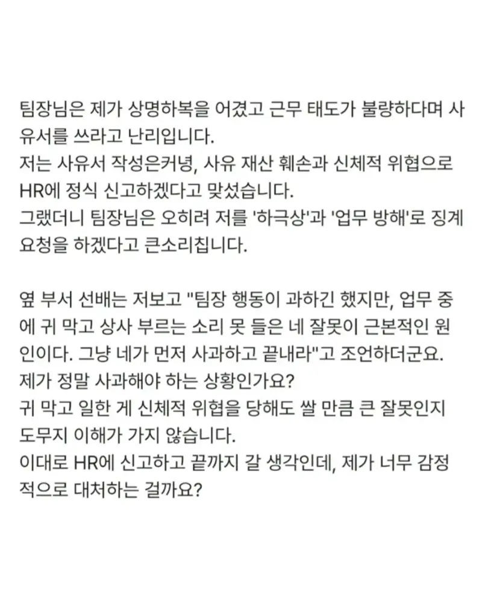

끼고 일할거면 부르면 대답할정도 볼륨으로 해야지
효율이 올라갑니당
효율이고 지랄이고 회사에서 상사가 부르면 대답은 해야지
초집중하면 다른건 신경 안써지던데
염병을 하네 반도체 깎냐
고도의 집중 ㅋㅋㅋㅋㅋ 간만에 웃었다
이어폰 한쪽까진 봐주는데 ㅋㅋㅋㅋ
저렇게 마이웨이 할 수 있는 에이스는 애초에 눈밖에 나지 않고 뭔 개짓거리를 해도 팀장급이나 관리자급이 오히려 눈치봄
이런새끼특: 귀때기끼고 업무에 집중 하는 본인이 ㅈㄴ 섹시한줄암
뭐든지 자기방식에 회사가 맞추라는건 개씹병신이지 본인이 회사에맞춰야지
내가 이어폰낄땐 암말도안하다가 일못하는 후임이 끼니까 빼라카던
전직장생각나네
ㅋㅋㅋ 일잘하면 상관안하지
저새끼 병신에 한표 ㅋㅋㅋㅋㅋㅋㅋ
본문에서 주관적 요소들을 다 제하고 보면 아무리 잘 쳐줘도 평범한놈이 사고친거고
지 잘났다고 뻥튀기한거라 치면 똥덩어리 손대기 싫어서 방치당하는 개폐급새끼가 욕처먹을 핑계까지 만든거임
어떻게 봐도 좋은 상황이 없어 ㅋㅋㅋ
센스가 부족한거라 봄
에이스였으면 팀장님이 따질때까지 헤드셋 쳐쓰는게 아니라 쓰기 전에 팀장한테 양해를 구했다
평소에 일잘하는 애가
사무실이 너무 소란스러워서 작업 효율이 너무 떨어지는데 혹시 업무하는 동안 헤드셋을 좀 껴도 될까요. 일단 메신저로 불러주시면 헤드셋 벗고 바로 제가 팀장님 자리로 가겠습니다.
라고 했으면 어느 팀장이 허락을 안하냐
새로 부임한 팀장이면 메신저소통이 기본룰인 것도 모를거고.
대충 처음에 팀장님이 사무실에서 귀막고 일하는거 아니다 했을 때 눈치까고 진작 양해구했으면 폭발까지도 안갔음ㅋㅋ
팀장님도 전회사에서 일하던 방식이 있을거고
팀분위기는 팀장님 스타일 따라가는거지
입은 뒀다뭐하냐
처음부터 해드폰이 문제임, 회사는 기본적으로 지켜야 하는 룰 존재함, 출 퇴근 시간 엄수, 휴식 시간 엄수, 복장 엄수 등등 그중에 저 팀에는 처음에야 메신저로 소통하고 엄무 처리 하는게 룰이 었겠지만 새로운 팀장이 오면서 협업 태도에 맞지 않다 라고언지를 했으면 귀를 열고 일했어야지, 팀장이 괜히 팀장이 아니 자나 사무실 총괄 팀의 총괄인 자가 하지 마라면 하지 말았어야지, 그리고 외주나 고객한테 바로바로 컨펌전화 받아야 할 상황이 많을 텐데 귀막고 있으면 어쩌자는 거야
팀 바이 팀이란 말이 그냥 있는게 아니지.
팀장이 새로 왔으면 팀장의 성향을 파악하고 최대한 맞추려고 하고 그 와중에 팀장의 성향과 다른 부분이 있고 내가 그걸 유지하고 싶다면 양해를 구하고 합의점을 찾았어야지. 내 좁은 세계에서 우리는 메신저로 얘기하는게 국룰임. 집중하려고 노이즈캔슬링 켜고 헤드폰끼고 하는게 기본임. 클라이언트 전화가 수시로 오는 곳에서 혼자 저렇게 섬처럼 일하겠다는게 지금까지 다른 직원들의 고통 분담으로 이뤄진지는 누군가는 알겠지.
일 진짜 잘하는 게이면 헤드셋을 쓰든 먹든 안건드림, 일도 못하는게 저러고 있으니 더 시비트는거지 게다가 주변에서도 그전에 한번도 이야기안해주는거보니 그냥 팀에서 내놓은거
주작 아니란 판단하에
개씹 ㅄ새끼네
폐급은 해고다 맞다 ㅋㅋㅋ
앞에 있는데 메신저로 얘기하는것도 웃긴거 아님? 어이가 없네 ㅋㅋㅋㅋㅋ
둘 다 병신
아니 저럴거면 그냥 재택근무하는 일만 찾아다니면 안됨?
난 주변사람 눈치 안 봐, 이딴 소리하고 다니는 인간들 중 병신 아닌 놈 없더라
팀장 입장에서 귓구녕 막고 일하는게 마음에 안들었다면 좆되게 만드는 많은 방법들이 있었을텐데 헤드셋을 거칠게 벗기는건 좋은 생각은 아니었다고 생각함.
글 보니 폐급냄새 존나 개 찐하게 나는데 왜 굳이 몸에 손을 대냐...
그냥 제발 헤드셋좀 벗어달라, 왜 지시사항을 무시하시냐고 사무실 사람들 다 들리게 고함 한번 질러주고 시키려고 했던 일은 다른사람들에게 나눠주고, 다음날부턴 그냥 팀 업무의 중심 흐름에서 제외시키고 오롯이 혼자 처리할 수 있는 잡무만 던지면 됨.
친구랑 일해도 아가리 720도 돌아갈정도로 쳐맞을짓이긴함 ㅋㅋ 돈 벌러 왔으면 회사 상사가 하지말라면 안해야지 ㅋㅋ 꼬우면 창업하던가
중2병이 저 나이까지 안 나으면 어케하냐....깝깝하다
월급쟁이가 까라면 까는거고 그거 싫으면 관두면 된다고 봄, 그래서 좆같은거를 계속 시키길래 관뒀었지 씨발꺼
아 진짜 존나 뚜드려 패고 싶다
폐급이 저런짓 많이 하더라.
일 잘하면 매일 지각해도 가만히 냅둔다
일을 더럽게 못했단뜻임
자기 스타일로 헤드셋 쓰고 일할거면 책잡힐일도 안만들었어야지. 개폐급인즛.
회사나 사회는 민주주의도 아니고 평등한 곳도 아니라는 선배 말이 회사 다닐수록 맞는 말인듯.
헤드폰 끼고 일하는 년놈중에 일 제대로 하는년놈 하나 없음.
사회성 jot박은 것들이 집중력 타령함.
안타까운건 그들은 지잡에 별 ㅈ도없는 커리어 임에도 헤드폰 하나로 수퍼맨 되는줄 안다는거임
신고 해봐 병신아 zz
왜 헤드셋 끼는지는 이해됨
아무리 업무 소음이라해도 내 주변에서 전화 받고, 서로 업무 대화 크게 나누고, 왔다갔다 거리면 집중력 완전 흐려짐
근데 누가 크게 불렀을 때 못들을 정도로 헤드셋 소리를 크게 하는 건 노이즈 캔슬링 보다는 걍 자기 만의 세상에 빠져서 일하려는 느낌 같은데
그냥 노캔 정도는 볼륨 감소 느낌이지 주변 소음이 아예 안들리는 수준은 아니라 생각함